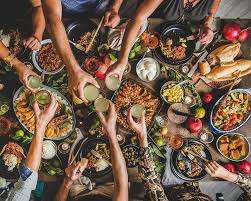

Welcome to Byte Swap
Reduce food wastage by swapping, selling, or purchasing food items!
About Byte Swap
Byte Swap is a web-based platform designed to combat food wastage in African households. Our goal is to connect people with excess food items to those who need them, promoting a community-driven approach to food security. Users can list their surplus food, exchange items using byte points, and even redeem points for rewards or meals at partner restaurants. Join us in our mission to reduce food waste and promote sustainable consumption.
